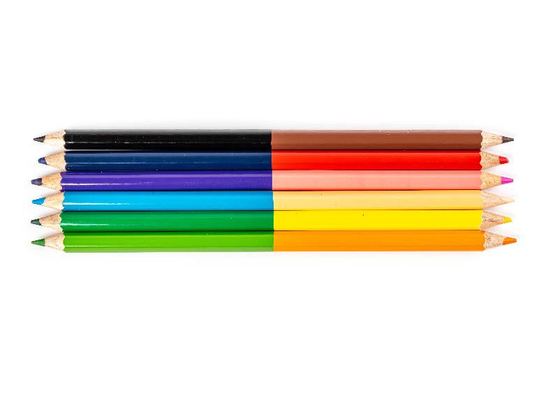
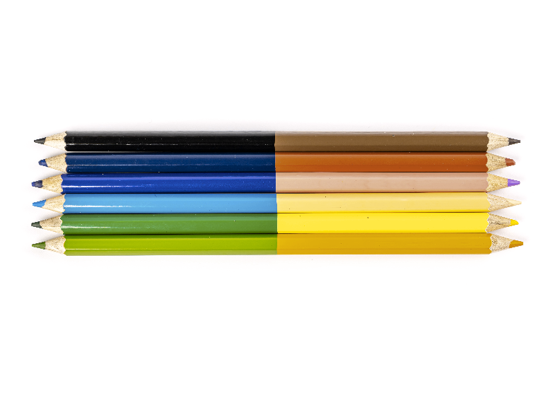
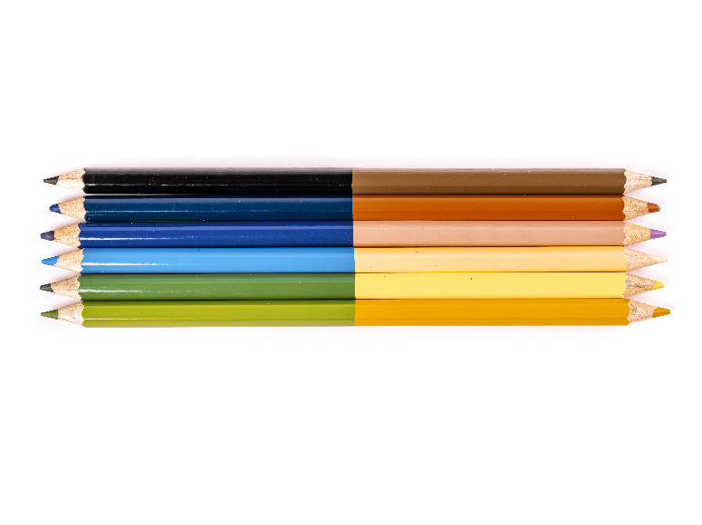
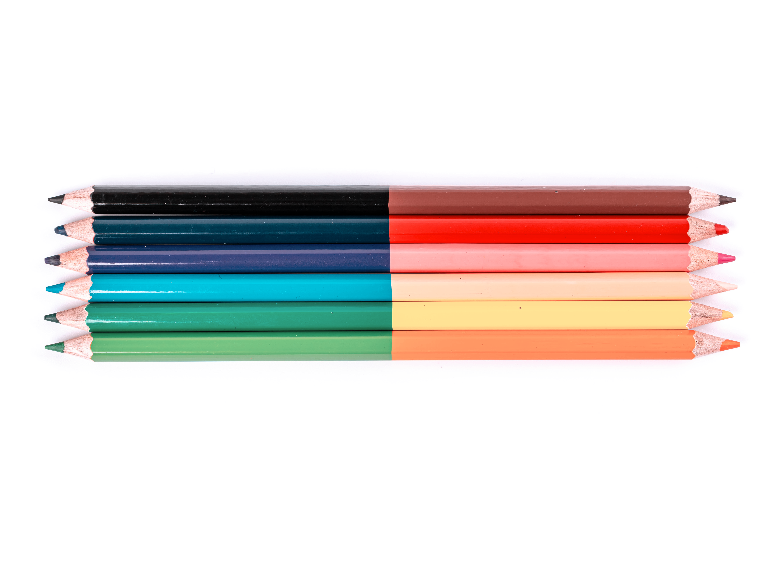
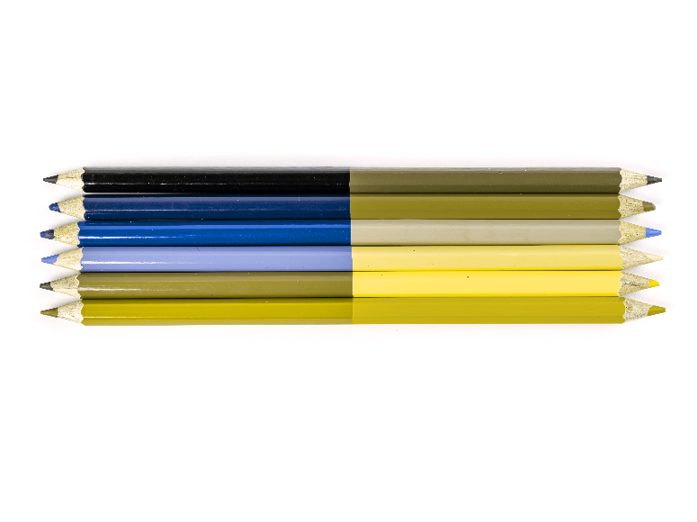
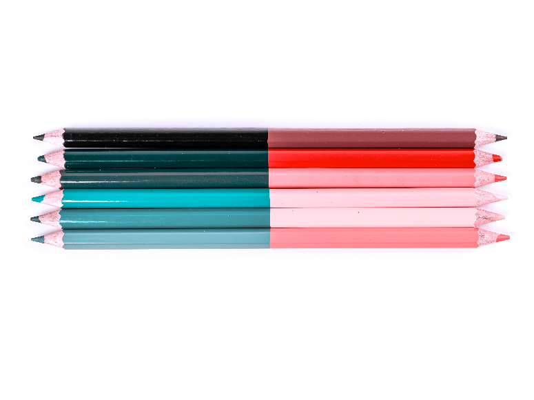
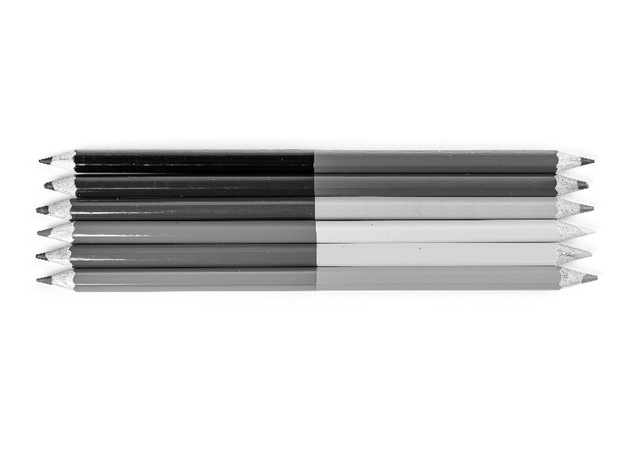

What is Color Vision Deficiency?
Color vision deficiency is (to be continued...)
Kinds of Color Vision Deficiency
Original Image (Trichromacy)

Red-Weak (Protanomaly)

Green-Weak (Deuteranomaly)

Blue-Weak (Tritanomaly)

Red-Blind (Protanopia)

Green-Blind (Deuteranopia)
Blue-Blind (Tritanopia)

Monochromacy (Achromatopsia)

Blue Cone Monochromacy (Achromatomaly)